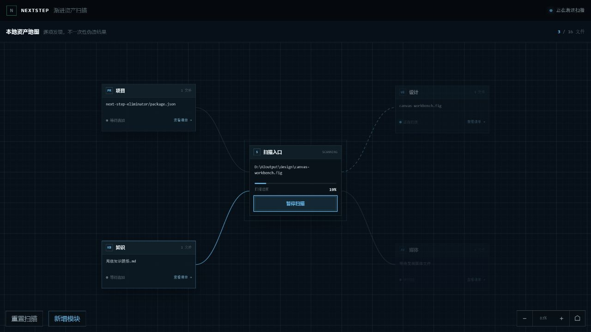
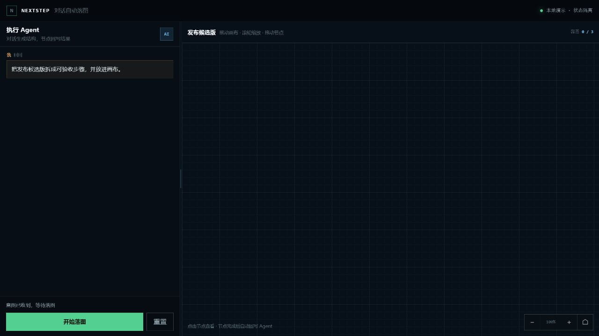
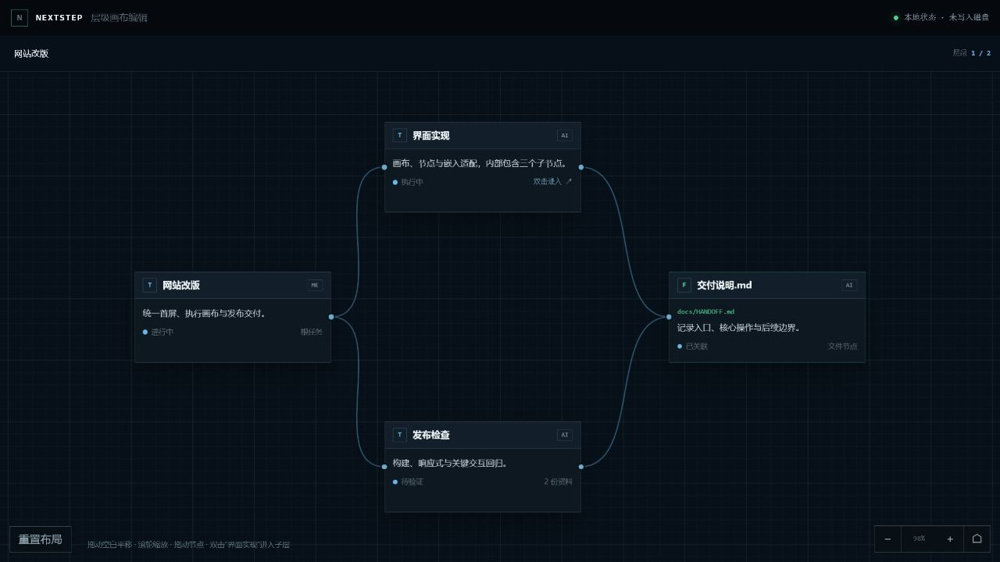
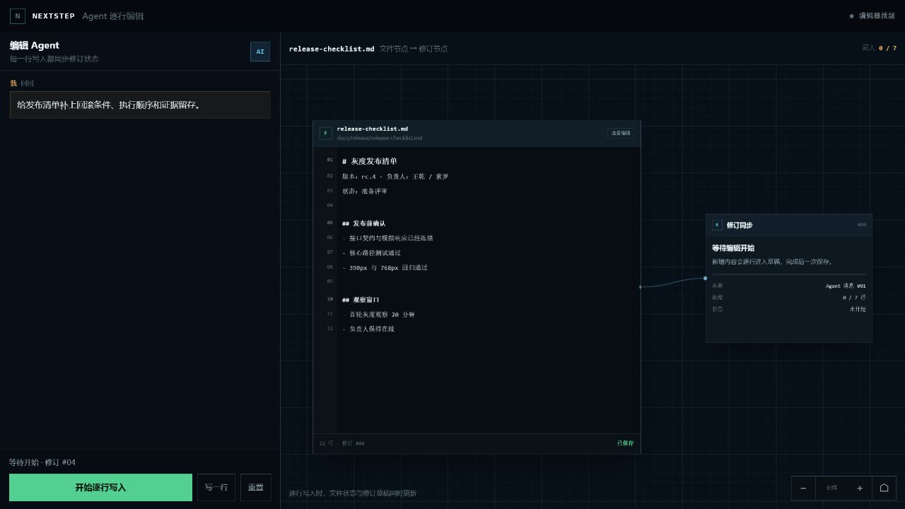
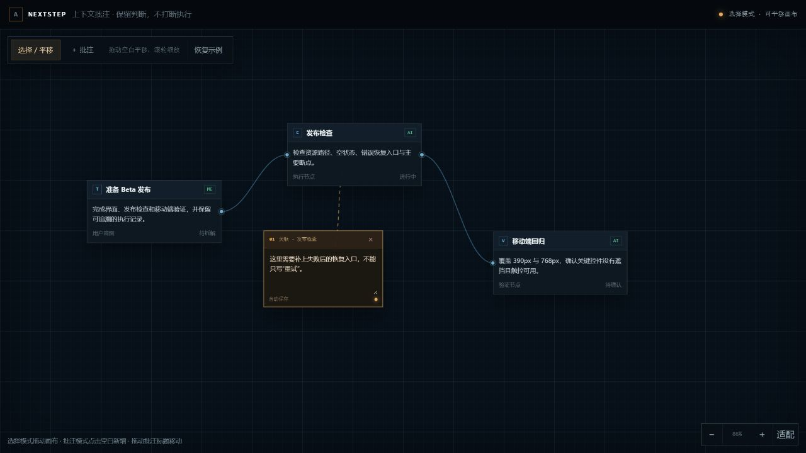
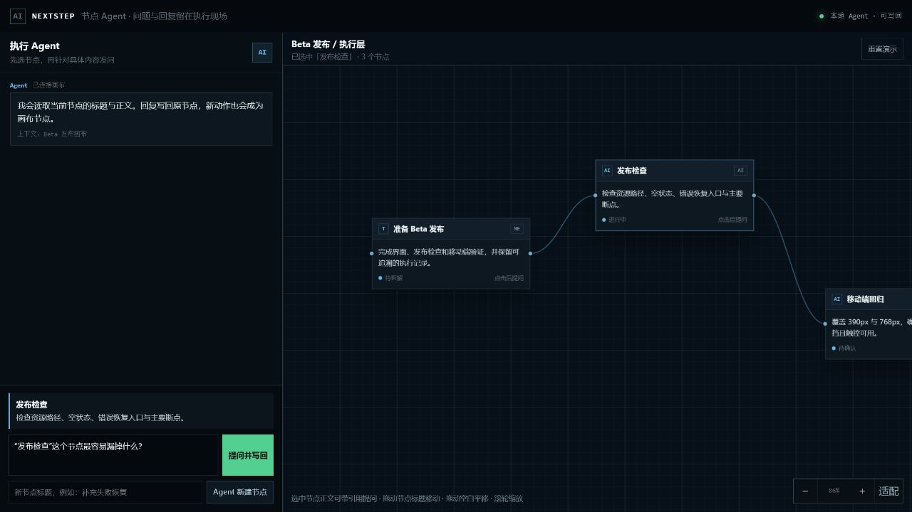
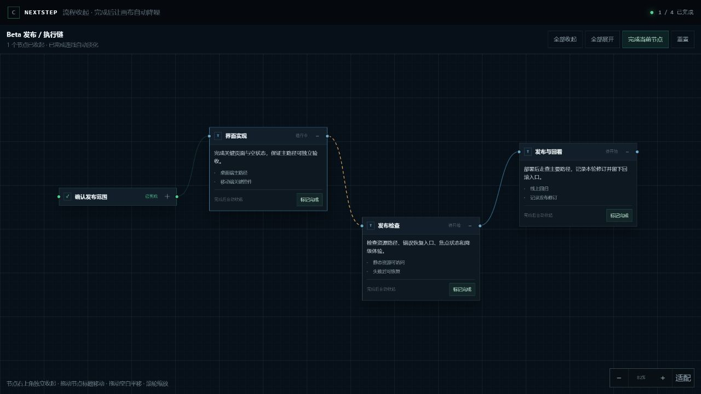
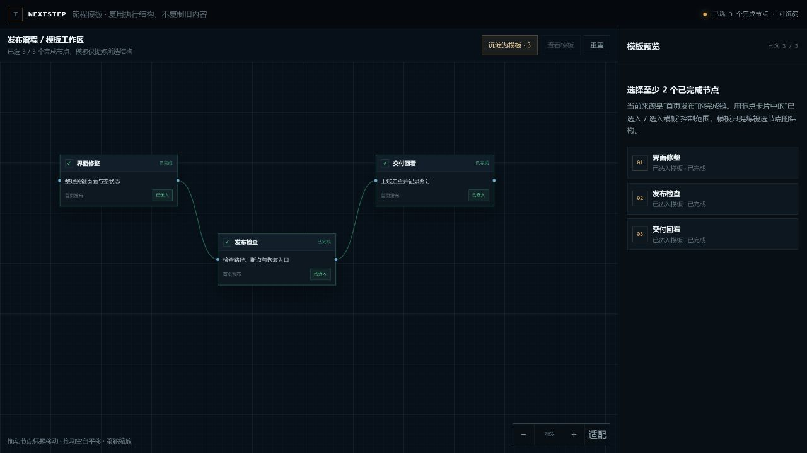

02 / TRACE
把 Agent 的任务、文件与决定，
收归成一张可追踪的画布。
LOCAL-FIRST / HUMAN IN CONTROL
IN DEVELOPMENT
ELIMINATOR
01 / PRODUCT VIEWS








02 / TRACE
LOCAL-FIRST / HUMAN IN CONTROL
03 / CURRENT BUILD
画布与本地数据底座已经落地；Agent 适配、历史恢复与正式发行仍在推进。
AVAILABLE嵌套画布、文件节点、搜索定位、批注、流式写入与本地保存
PROTOTYPE8 项核心交互场景均可操作
BUILDING正式 Agent 适配、diff / 历史 / 恢复、安装与公开发行
DEVELOPMENT PREVIEW / NOT A FINAL RELEASE